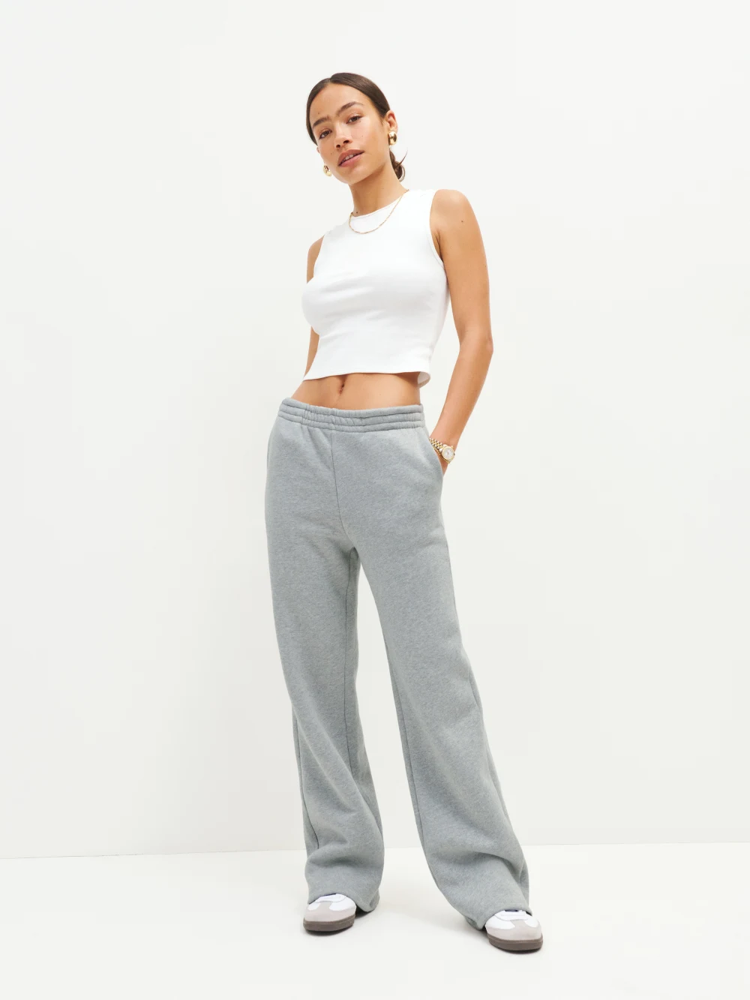

Brandy Melville
Rosa Sweatpants
The ultimate lounging pant, but is made from cotton, a thirsty crop that consumes thousands of gallons of water. Though Brandy Melville is one of the most popular brands to date, their lack of transparency in terms of how their apparel is produced makes it an unfavorable choice.
Sustainability Facts
Materials:
75% Cotton
25% polyester
Cotton Sustainability Facts:
According to WWF, it takes more than 20,000 liters (5,283 gallons) of water to produce just
one kilogram (2.2 pounds) of cotton, which roughly equals one T-shirt and a pair of jeans.
Polyester Sustainability Facts:
Two square meters of polyester is equal to 6.4kg carbon emissions, 32.5km distance driven, and 164.9m3 of
CO2 gas.

Reformation
Wide Leg Sweatpant